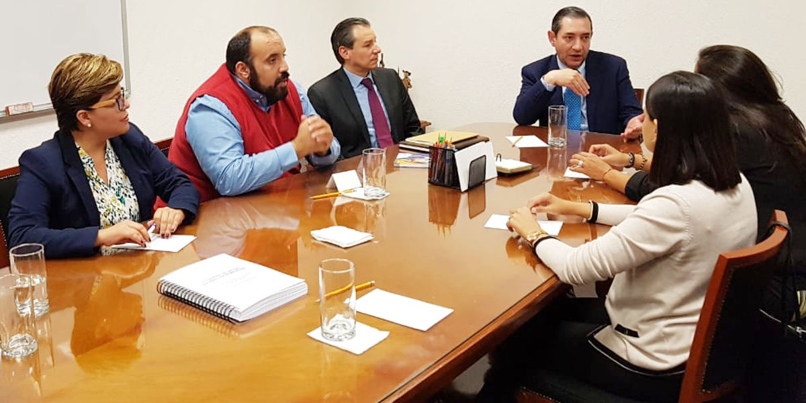

Ciudad de México a 10 de Julio de 2018.
Encabezados por el Presidente del Consejo de Participación Ciudadana de Coahuila, Manuel Gil Navarro los consejeros María de Lourdes de Koster López, Adolfo Von Bertrab y Ana Yuri Solís, se reunieron con Ricardo Salgado Perrilliat, Secretario Ejecutivo del Sistema Nacional Anticorrupción, para abordar diversos temas relacionados con el quehacer de ambas instancias.
A la reunión celebrada en la sede de la Secretaría Ejecutiva, también se presentó el Comité de Participación Ciudadana del Sistema Anticorrupción del Estado de Puebla con la asistencia de su presidenta, Karen Berlanga Valdés.

Entre los temas abordados en la sesión de trabajo, se analizó el impulso de políticas públicas tendientes a prevenir y erradicar conductas que promuevan e incentiven la corrupción, además de armonizar la labor propuesta desde el Sistema Nacional y que se replique en los Estados.
Como parte de la agenda se hablo de proyectos técnicos, del análisis de la Política Anticorrupción, de la plataforma del Sistema de Fiscalización y los formatos para la presentación de las declaraciones patrimoniales de servidores públicos.
De igual forma en la reunión los participantes dialogaron en torno a la aplicación de metodologías, por parte de los Sistemas Anticorrupción, para el seguimiento de compras y licitaciones en los Estados.
Uno de los ejes de la sesión de trabajo fue la profesionalización de quienes integran los sistemas locales, incluyendo a quienes forman parte de las instancias que integran el Comité Coordinador, con el objetivo de garantizar la continuidad y el impulso a un servicio profesional de carrera.
Por parte de la Secretaría Ejecutiva asistió también a la reunión, Bernardo Rojas Nájera, director general de Vinculación Interinstitucional.